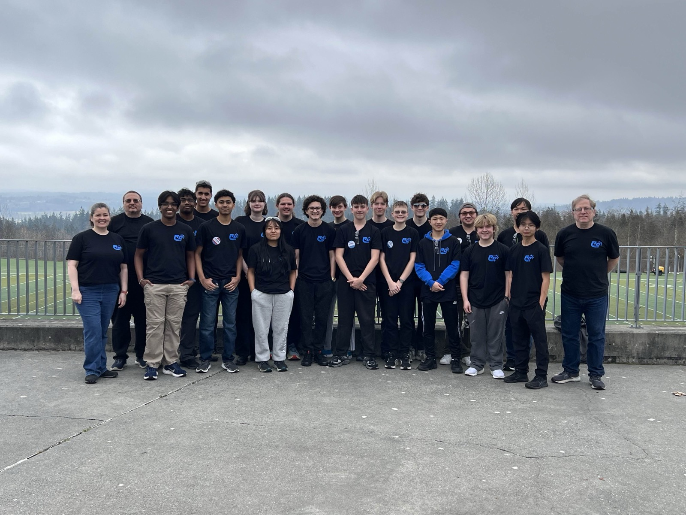

About Us
What is ArrowDynamics All About?
A student-led robotics team competing in the FIRST Robotics Competition.

ArrowDynamics is FIRST Robotics Competition Team 10079, based at Bothell High School in Bothell, Washington. We compete in the FIRST Pacific Northwest District, and we are open to all Bothell High School students, no experience required.
Our mission is to excite and motivate students to pursue careers in science, engineering, and technology, and to develop leadership, business, and life skills. Students do the work: designing, machining, wiring, programming, and managing the team like a small business, with guidance from volunteer mentors.
Each January, FIRST reveals a brand-new game, and teams around the world get just weeks to design and build a robot to play it. Our competition season runs from kickoff in January through district events and the FIRST Washington District Championship in the spring. In the off-season, we compete in exhibition events, train new members, and connect with our community.
We are a young team with a fast start: in our 2025 rookie season we earned the Rookie All-Star Award at the PNW District Championship, and in 2026 we were event finalists at Glacier Peak and earned the Rising All-Star Award three times.
It was tough, it was hard. Mindless nights of planning, building, and learning, but the dedication paid off, having one of the best autos in the competition of the 2025 year, and having daily meetings, including Saturday, all led to the success this team has today.